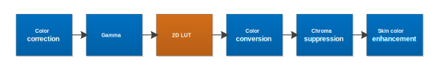

2D LUT adjusts specific colors without affecting others.
Tune color correction and gamma.

-
On the Pipeline tab,
click 2DLut and then click a region in the Regions
group.
-
On the Main tab, click LoadImage
and select an image to tune.
-
On the Main tab, in the color wheel, drag knee points to
the perferred color (e.g., drag a green knee point to a brighter shade of green)
and the hue and saturation will be adjusted accordingly in the
Saturation Lut and Hue Lut
tabs. White lines denote the original RGB colors and the black lines denote the
target RGB colors.
Adjust the Hue Nodes and Saturation
Nodes values in the Impacted Range group to adjust how many
neighboring knee points are affected during adjustments. If a larger color
adjustment is being made, increase the impacted range so the changes are
smoother.
-
(Optional) Click the 1-D Lut tab and set
the knee points for lut_1d_h[25] and
lut_1d_s[16] for 1D colors that need
adjustments.
lut_1d_h[25] represents the hue angle
and lut_1d_s[16] represents the saturation.
LUTs are always programmed in ascending order, and no two entries can be
equal.
-
Obtain the hue and saturation LUT (HSL) values for the original
colors and target colors.
-
On the Main tab, set the values for the
Original RGB and Target
RBG fields.
-
Set the 2D delta hue and saturation LUTs. To preserve
the gray areas, hue and saturation should not change when the saturation
is zero.
-
Click Adjust Lut to adjust the color wheel knee
points to match the original and target RGB values.
The Saturation Lut and Hue
Lut tabs are automatically updated. To preserve the gray
areas, hue and saturation should not change when the saturation is
zero.
-
(Optional) Click the Boundary tab and
enter values to set the L boundary points to maintain adjustments within a
specified brightness range.
By default, L start A and L
start B= 0, and L end A and L
end B = 1.0.
-
(Optional) Set the Y Offset Weight value
for the preferred luma preservation and color enhancement.
The Y Offset Weight range is 0 to 1.0,
where the default value is 0. A value of 0 is recommended for best colors. When
the value is 1, the Y value is best preserved.
-
Repeat process for each region.
-
Click to save any changes made.